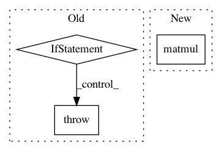

d1ac7b831ad36cd0e4bdd7980819f83208345148,gpflow/expectations.py,,_expectation,#Any#Any#Any#Any#Any#,560
Before Change
@dispatch(DiagonalGaussian, kernels.Product, InducingPoints, kernels.Product, InducingPoints)
@quadrature_fallback
def _expectation(p, kern1, feat1, kern2, feat2):
if feat1 != feat2:
raise NotImplementedError("Different features are not supported")
if kern1 != kern2:
raise NotImplementedError("Calculating the expectation over two different Product kernels is not supported")
kern = kern1
feat = feat1
if not kern.on_separate_dimensions:
raise NotImplementedError("Product currently needs to be defined on separate dimensions.") // pragma: no cover
with tf.control_dependencies([
tf.assert_equal(tf.rank(p.var), 2,
message="Product currently only supports diagonal Xcov.", name="assert_Xcov_diag"),
After Change
with params_as_tensors_for(mean1), params_as_tensors_for(mean2):
N = tf.shape(p.mu)[0]
e_xxt = p.cov + (p.mu[:, :, None] * p.mu[:, None, :]) // NxDxD
e_xxt_A = tf.matmul(e_xxt, tf.tile(mean2.A[None, ...], (N, 1, 1))) // NxDxQ
e_x_bt = p.mu[:, :, None] * mean2.b[None, None, :] // NxDxQ
return e_xxt_A + e_x_bt
In pattern: SUPERPATTERN
Frequency: 3
Non-data size: 3
Instances
Project Name: GPflow/GPflow
Commit Name: d1ac7b831ad36cd0e4bdd7980819f83208345148
Time: 2018-02-07
Author: alex.ialongo@gmail.com
File Name: gpflow/expectations.py
Class Name:
Method Name: _expectation
Project Name: geomstats/geomstats
Commit Name: 36bf1cd036d852d10b189727d43fee6ee0b6c66c
Time: 2020-04-02
Author: 62605255+pchauchat@users.noreply.github.com
File Name: geomstats/geometry/special_euclidean.py
Class Name: SpecialEuclidean
Method Name: inverse
Project Name: GPflow/GPflow
Commit Name: d1ac7b831ad36cd0e4bdd7980819f83208345148
Time: 2018-02-07
Author: alex.ialongo@gmail.com
File Name: gpflow/expectations.py
Class Name:
Method Name: _expectation